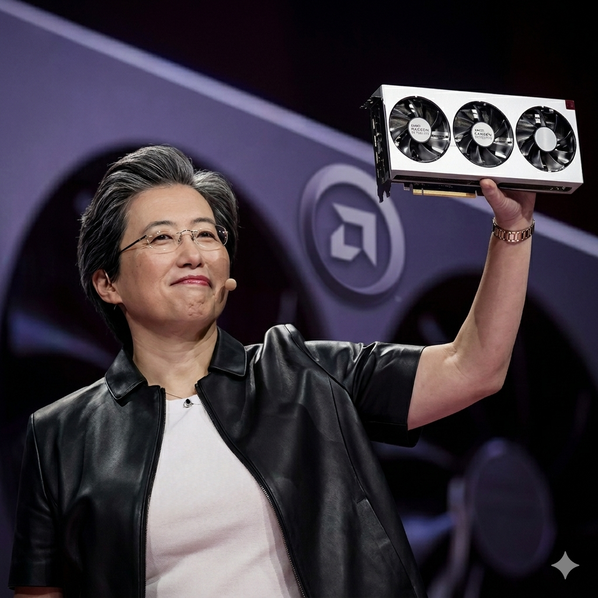

Tras graduarse en la prestigiosa Bronx High School of Science de Nueva York, una escuela pública specializada, estudió ingeniería eléctrica en el Instituto Tecnológico de Massachusetts (MIT).
Como presidenta y directora ejecutiva de AMD, la Dra.
Lisa Su ha liderado la transformación de la compañía en el líder de la
industria en computación adaptativa y de alto rendimiento ,
ayudando a resolver los desafíos más importantes del mundo mediante el suministro de soluciones
de computación e inteligencia artificial de próxima generación